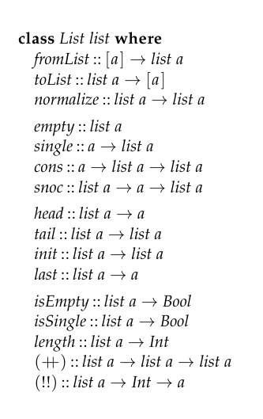

lecture1
this lecture would remind us about haskell, lazy/strict evaluation
goals of the course:
- explore different paradigms
- algorithmic thinking
- analyse performance
- mathematical modeling
insert :: Ord a => a -> [a] -> [a]
insert x [] = [x]
insert x (y:ys) =
| x <= y = x : y : ys
| otherwise = y : insert x ys
let T_insert(n) stand for the time needed to insert n
then
- T_insert(0) = 1
- T_insert(n) = 1 + T_insert(n-1)
so T_insert(n) = n + 1, it is O(n) in time, the list is O(n) in space
isort :: Ord a => [a] => [a]
isort [] = []
isort (x:xs) = insert x (isort xs)
-- we first want xs to be sorted, so isort xs
-- we want to insert x to the sorted xs, so insert x (isort xs)
- T_isort(0) = 1
- T_isort(n) = 1 + T_insert(n-1) + T_isort(n-1)
so
\(\begin{aligned} \text{T_isort}(n) &= 1 + \text{T_insert}(n-1) + \text{T_isort}(n-1)\\ &=1 + n + \text{T_isort}(n-1)\\ &= 1+n+(1+n-1) + \text{T_isort}(n-2)\\ &=n + \sum_{i=1}^{n}i\\ &=O(n^2)\end{aligned}\)
we create two further functions
minimum :: Ord a => [a] -> a
minimum xs = head(isort xs)
-- isort sorts the list, the head is the minimum
so
minimum [3,5,2,1] = head (isort [3,5,2,1])
= head (insert 3 (isort [5,2,1]))
= head (insert 3 (insert 5 (isort [2,1])))
= head (insert 3 (insert 5 (insert 2 (isort [1]))))
= head (insert 3 (insert 5 (insert 2 (insert 1 []))))
= head (insert 3 (insert 5 (insert 2 (1 : ?))))
= head (insert 3 (insert 5 ((1 : ?))))
= head (insert 3 (((1 : ?))))
= head ((((1 : ?))))
= 1
minimum looked like \(O(n^2)\) but it is \(O(n)\)
if haskell is a strict language, then minimum is \(O(n^2)\)
if the algorithm looked at every part of the data, then there is no difference between lazy and strict
if haskell is lazy
if haskell is strict
Normal Forms
lazy stuff are in WHNF(Weak-Head Normal Form), strict stuff are in NF(Normal Form)
this is usually defined in terms of the lambda calculus
- abstraction: \x -> e
- application: f x
- variables: x
An expression e is in Normal Form if it is not reducable
- \x -> e where e is normal
- x is normal
- f x is normal when f is a variable and both f and x are normal
WHNF is similar but bodies of lambda need not be normal
\x -> (\y -> y) x
x : (\...) 7 xs is WHNF (:) x ()
NF: - 1 - Just 4 - [1,2,3] - \x -> x+1 - Just - \f -> f 7(we dont know what f is)
WHNF (all the above and) - 1 : repeat 1 - \x -> 3 + 4 - Just (3+4)
Expressions(all the above and) - 3 + 4 - repeeat 1
Model to evaluate the cost of the algorithm
e ::= x -- variable
| k -- constant(0,[],(:),+,*)
| f e1 .. en -- application
| if e then e1 else e2 -- conditional
Functions will always have the form f x1 .. xn
since we can do f e1 .. en = e and [x,y,z] = x : y : z : []
insert x xs =
if null xs then : []
else if x <= head xs then x : xs
else head xs : insert x (tail xs)
let T(f) x1 .. xn is the number of steps it takes to evaluate fand`x1 .. xn
when f is primitive (+), (*), (:)
T(x) = 0 -- in other words, variables are free
T(k) = 0 -- in other words, constants are free
-- evaluating an application is the same as evaluating all the arguments,
-- and then the application of `f` to those arguments (as above)
T(f e1 .. en) = T(f) e1 .. en + T(e1) + .. + T(en)
T(if e then e1 else e2) = T(e) + if e then T(e1) else T(e2)
-- evaluating a condition first evaluates the condition, then conditonally
-- evaluates either arm of the conditional.
T(f) x1 .. xn = 1 + T(e)
we have
length xs = if null xs then 0 else 1 + length (tail xs)
T(length xs)
= -- by T(f e1 .. en) = T(f) e1 .. en + T(e1) + .. + T(en)
T(length) xs + T(xs)
= -- by T(x) = 0
T(length) xs + 0
= -- by T(f) x1 .. xn = 1 + T(e)
1 + T(if null xs then 0 else 1 + length (tail xs))
= -- by T(if e then e1 else e2) = T(e) + if e then T(e1) else T(e2)
1 + T(null xs) + if null xs then T(0) else T(length (tail xs))
= -- by T(f e1 .. en) = T(f) e1 .. en + T(e1) + .. + T(en)
1 + T(null) xs + T(xs) + if null xs then T(0) else T(length (tail xs))
= -- By T(primitive) = 0, T(x) = 0
1 + 0 + 0 + if null xs then T(0) else T(length (tail xs))
= -- By T(k) = 0
1 + if null xs then 0 else T(length (tail xs))
= -- By T(f e1 .. en) = T(f) e1 .. en + T(e1) + .. + T(en)
1 + if null xs then 0 else T(length) (tail xs) + T(tail xs)
= -- By T(f e1 .. en) = T(f) e1 .. en + T(e1) + .. + T(en)
1 + if null xs then 0 else T(length) (tail xs) + T(tail) xs + T(xs)
= -- By T(primitive) = 0, T(x) = 0
1 + if null xs then 0 else T(length) (tail xs) + 0 + 0
= -- simplify
1 + if null xs then 0 else T(length) (tail xs)
T(length xs) = T(length) + T(null) + T(xs) + if null xs then T(0) else T(+) + T(1) + T(length) + ...
Composition:
The cost of
this is the composition rule
complexity
functions used to describe complexity comprise of the following
- symbols: x, n, m
- logs
- exp
- constants
so define some symbols here
we have two functions f and g
- \(f\succ g \iff \lim_{n\to\infty}\frac{f(n)}{g(n)} = 0\)
- \(f\succcurlyeq g \iff \lim_{n\to\infty}\frac{f(n)}{g(n)} \lt \infty\)
- \(f\asymp g \iff \lim_{n\to\infty}0<\frac{f(n)}{g(n)}< \infty\)
- \(f\preccurlyeq g \iff \lim_{n\to\infty}\frac{f(n)}{g(n)} > 0\)
- \(f\prec g \iff \lim_{n\to\infty}\frac{f(n)}{g(n)} = \infty\)
(the symbols are \succ \succcurlyeq \asymp \preccurlyeq \prec)
complexity functions includes
- \(O\) : \(f(n)\in O(g(n))\iff f\succcurlyeq g\)
- \(o\) : \(f(n)\in o(g(n))\iff f\succ g\)
- \(\Theta\) : \(f(n)\in \Theta(g(n))\iff f\asymp g\)
- \(\omega\) : \(f(n)\in \Omega(g(n))\iff f\prec g\)
- \(\Omega\) : \(f(n)\in \Omega(g(n))\iff f\preccurlyeq g\)
the formal definition
- \(O\): \(f(n)\in O(g(n))\iff\exists k > 0, \exists n_0 > 0, \forall n > n_0, f(n)\le k*g(n)\)
- \(o\): \(f(n)\in o(g(n))\iff\forall k > 0, \exists n_0 > 0, \forall n > n_0, f(n)< k*g(n)\)
- \(\omega\): \(f(n)\in \omega(g(n))\iff\forall k > 0, \exists n_0 > 0, \forall n > n_0, f(n)> k*g(n)\)
- \(\Omega\): \(f(n)\in O(g(n))\iff\exists k > 0, \exists n_0 > 0, \forall n > n_0, f(n)\ge k*g(n)\)
- \(\Theta\): \(f(n)\in O(g(n))\iff f(n)\in O(g(n))\wedge f(n)\in \Omega(g(n))\)
so we have: all the capitalize are with exists in the front, and equal in the middle
all the Os are less thans, all the Omegas are less thans, the Theta is combination of the Capitals
for f(x) and g(x) check \(\lim_{n\to\infty} \frac{f(n)}{g(n)}\) and 0
see https://oi.wiki/basic/complexity/
tutorial 1:
Exercise 1.1
Given the following function concatenating two lists
with a recurrence relation T(n,m), approximate the time it takes to compute xs ++ ys for any list xs of length n and ys of length m
Exercise 1.2
Consider an alternative strict time analysis function T', define to be the same as T, except T' is refined to have cost 1 instead of 0 on variables, constants and primitive functions, i.e
Compute T'(length xs) in terms of T'(length (tail xs))
done
1.3
Compute the strict running time of T(length (insert x xs)) using the composition rule
insert :: Ord a => a -> [a] -> [a]
insert x [] = [x]
insert x (y:ys) =
| x <= y = x : y : ys
| otherwise = y : insert x ys
length [] = 0
length (y:ys) = 1 + (length ys)
so T_length is obviously n+1 with n being the length of the list
so T(length (tail xs)) = length xs - 1
note that we computed T_insert(n) = n+1
where n is the length of y:ys
1.4
Pattern matching can be added to the expresion language e as follows
Give an appropriate definetion of T(case e1 of [] -> e2;(x:xs) -> e3)
so
the rest is the same as if then (two if thens)
1.5(finally no more T stuff)
prove formally that\((n+1)^2\in\Theta(n^2)\)by exhibiting the necessary constants
\(\lim_{n\to\infty}\frac{(n+1)^2}{n^2}\\ =\lim_{n\to\infty}\frac{n^2+2n+1}{n^2}\\ =\lim_{n\to\infty}1 + \frac{2}{n} + \frac{1}{n^2}\\ =1\le\infty\)
so by definition
\((n+1)^2\in\Theta(n^2)\)
1.6(done in class, will add proof afterwards)
Justify whether wach of the following is true or false
- \(2n^2 + 3n\in\Theta(x^2)\) -> true
- \(2n^2 + 3n\in O(n^3)\) -> true
- \(n\log n\in O(n\sqrt{n})\) -> true
- \(n + \sqrt{n}\in O(\sqrt{n}\log n)\) -> fasle
- \(2^{\log n}\in O(n)\) -> true
1.7
Show formally that\(o(g(n))\)is a proper subset of\(O(g(n))\)for any function g using thier definitions
so consider a arbitrary \(f(x)\in o(g(n))\)
then by definition
\(\lim_{n\to\infty} \frac{f(n)}{g(n)} = 0 \lt\infty\)
so then by definition of \(O(g(n))\)
\(f(n)\in O(g(n))\iff \lim_{n\to\infty}\frac{f(n)}{g(n)}\lt \infty\)
so obviously \(f(n)\in O(g(n))\)
as since f(n) is taken arbitrarily, \(o(g(n))\subset O(g(n))\)
1.8
Explain why there is no definition \(\theta(g(n))\) that corresponds to \(\Theta(g(n))\) even though there is \(o(g(n))\) coressponding to \(O(g(n))\) and \(\omega(g(n)\) correspond to \(\Omega(g(n))\)
so lets take a look at the definitions
- \(f\succ g \iff \lim_{n\to\infty}\frac{f(n)}{g(n)} = 0\)
- \(f\succcurlyeq g \iff \lim_{n\to\infty}\frac{f(n)}{g(n)} \lt \infty\)
- \(f\asymp g \iff \lim_{n\to\infty}0<\frac{f(n)}{g(n)}< \infty\)
- \(f\prec g \iff \lim_{n\to\infty}\frac{f(n)}{g(n)} = \infty\)
- \(f\preccurlyeq g \iff \lim_{n\to\infty}\frac{f(n)}{g(n)} > 0\)
(the symbols are \succ \succcurlyeq \asymp \prec \preccurlyeq)
complexity functions includes
- \(o\) : \(f(n)\in O(g(n))\iff f\succ g\)
- \(O\) : \(f(n)\in O(g(n))\iff f\succcurlyeq g\)
- \(\Theta\) : \(f(n)\in \Theta(g(n))\iff f\asymp g\)
- \(\omega\) : \(f(n)\in \Omega(g(n))\iff f\prec g\)
- \(\Omega\) : \(f(n)\in \Omega(g(n))\iff f\preccurlyeq g\)
you could see that the capitalized notation and the lowercase notation corresponds to each other, they only miss a curve line in the expression, but how do you add a curve line to \(\asymp\)?
also, from o -> O -> \(\Theta\) -> \(\omega\) -> \(\Omega\) you could see that if \(g(n)\) is fixed, \(f(n)\) actually display a incresing trend, simply no space for \(\theta\)
Lecture 2:
This lecture is about different kinds of lists
In haskell, we have the singly-linked lists
we also have grammer sugar for list
we want persistent data structures, or stuff we can reuse
so (++)
append two lists together
[1,2,3] ++ [4,5,6] = [1,2,3,4,5,6]
so this definition goes through all the elements in xs and ys, and destroies ys
rather we can do
this definition preserves ys, so it has structual sharing
We have to tear down xs, and we cannot mutate it
time complexity O(n), n = length xs, obviously
so the time complexity is \(O(nm)\) where all the xs has average lenght n and xss has length m
foldr is a recipe for right associative application of the function f to elements of a list and k
so
we also have foldl which applies to left associative operators
foldr f k and foldl f k do the same thing extrinsically
so f needs to be associative and k needs to be a zero
in other words
The mathematical model of this is a Monoid
so
in this way we can show that
foldr (<>) mempty = foldl (<>) mempty
or
foldr (++) [] = foldl (++) [], they do the same thing
Are the complexity of concat1 = foldr (++) [] and concat2 = foldl (++) []
yes and no, if they are the same size then yes, other then no
foldl will keep traversing the early lists again and again
so
Surely this is not a problem, we have Trees
what values does is replace forks with ++
We have no control here of the associativity of the ++sthe worst case of ++ is O(n^2). we can do better, but we need a different structure
this is the interface for sequencial data-structures
class Seq seq where
nil :: seq
cons :: a -> seq a -> seq a
snoc :: seq a -> a -> seq a
append :: seq a -> seq a -> seq a
len :: seq a -> Int
we will also add two special cases
We can make a structure adhere to this
instance Seq [] where
nil = [] -- O(1)
cons = (:) -- O(1)
snoc xs x = xs ++ [s] -- O(n)
append = (++) -- O(n)
len = length -- O(n
toList = id -- O(1)
fromList = id -- O(1)
Let's make a new sequence
instance Seq LenList where
nil = LenList 0 []
cons x (LenList n xs) = LenList (n + 1) (x : xs)
snoc (LenList n xs) x = LenList (n + 1) (snoc xs x)
append (LenList n xs) (LenList m ys) = LenList (n + m) (xs ++ ys)
len (LenList n _) = n -- O(1)
toList (LenList _ xs) = xs -- O(1)
fromList xs = LenList (length xs) xs -- O(n)
as a side note, there are probably more operations we'd like to support
head :: seq a -> a -- for list O(1)
tail :: seq a -> seq a -- for list O(1)
init :: seq a -> seq a -- for list O(1)
last:: seq a -> a -- for list O(n)
(!!) :: seq a -> Int -> a -- for list O(n)
We'll do this in another lecture
We are interested in a representations of sequences where appending is cheap.
Let's look at function composition
(f . g) x = f (g x)
((f . g) . h) x = (f . g) (h x)
= f (g (h x))
(f . (g . h)) x = f ((g . h) x)
= f (g (h x))
Function composition has a nice property: It does not matter which way round you write it, lets do this to lists
xs ++ (ys ++ zs)
=
xs ++ (ys ++ (zs ++ []))
=
(xs ++) ((ys ++) ((zs ++) []))
=
(xs ++) . (ys ++) . (zs ++) [] :: [a]
~
toList ((xs ++) . (ys ++) . (zs ++)) :: [a]
~
toList (fromList xs . fromList ys . fromList zs) :: [a]
this is called a difference List
Lets use the aove intuition to start filling the following
instance Seq DList where
toList (DList dxs) = dxs [] -- O(n)
fromList xs = DList (xs ++) -- O(1)
nil = DList id
Early on, we knwo that Lists are monoids
Functions of type (a -> a) are also monoids. This seems to line up nicely
cons x dxs = fromList [x] `append` dxs -- O(?)
= DList ([x] ++) `append` dxs
= DList (x :) `append` dxs
-- imagine pattern matching here
= DList ((x :) . dxs)
snoc dxs x = dxs `append` fromList [x] -- O(?)
= dxs `append` DList (x :)
-- imagine pattern matching here
= DList (dxs . (x :))
cons x (DList dxs) = DList ((x :) . dxs) -- O(1)
snoc x (DList dxs) = DList (dxs . (x :)) -- O(1)
so now
So difference Lists are good at constructing Lists. They are awful at processing
values' :: Tree a -> [a]
values' t = toList (go t)
where go :: Tree a -> DList a
go (Leaf x) = cons x nil
go (Fork rt lt) = go (lt) `app end` go rt
so The complexity of go ens ip being O(n) in the number of nodes in the tree, n . toList is O(n), m <= n, in the number of leaves in the tree m. values has overall complexity O(n) in the size of the tree
We have seen an asymptotic improvement in the performance of values
vs = values' t
= toList (go t)
= toList (go Fork (Fork (Leaf 1))
(Leaf 2)
(Fork (Leaf 3))
(Leaf 4))
-- we know that go replaces leaves
-- with singletons an forks with appends
= toList (append (append (cons 1 nil))
(cons 2 nil)
(append (cons 3 nil))
(cons 4 nil))
= toList (append (append (cons 1 (DList id)))
(cons 2 (DList id))
(append (cons 3 (DList id)))
(cons 4 (Dlist id)))
= toList (append (append (DList ((1 :) . id))
(DList ((2 :) . id)))
(append (DList ((3 :) . id))
(DList ((4 :) . id))))
= toList (append (append (DList ((1 :)))
(DList ((2 :))))
(append (DList ((3 :)))
(DList ((4 :)))))
= toList (append (DList ((1 :) . (2 :)))
(DList ((3 :) . (4 :))))
= ((1 :) . (2 :)) . ((3 :) . (4 :))
= ((1 :) . (2 :)) (((3 :) . (4 :)) [])
= ((1 :) . (2 :)) ((3 :) ((4 :) []))
= ((1 :) . (2 :)) (3 : (4 : []))
= (1 :) ((2 :) (3 : (4 : [])))
= 1 : ( 2 : (3 : (4 : [])))
-- or, without simplifying cons
= [1] ++ ( [2] ++ ([3] ++ ([4] ++ [])))
Are difference Lists useful?
In a purefully functional language, haskell, its good, but why haskell, why functional programming
in an impure language like scala, we can do better, we can just add things at the end of a mutable builder. In fact, sometimes toList is O(1) even for those
lecture 3:
divide and conquer (分治 in Chn)
A divide and conquer algorithm is one which - split the problem into subproblems - solve the sub-problems and turn them into sub-solutions - combine the sub-solutions to form a solution
merge sorting
a divide and conquer algorithm
so the sub-problem is to sort smaller list, we need a split
This function can be used to make a list small
we also need to merge the two list together
merge :: Ord => [a] -> [a] -> [a]
merge [] ys = ys
merge xs [] = xs
merge xxs@(x:xs) yys(y:ys)
| x <= y = x : merge xs yys -- to make the sorting algorithm stable
| otherwise = y : merge xxs ys
so
msort :: Ord => [a] -> [a]
msort [] = []
msort [x] = [x]
msort xs =
let (us,vs) = splitHalf xs
us' = msort us
vs' = msort vs'
in merge us', vs'
so
$ \begin{aligned} \text{T_msort}(0) &= 1\ \text{T_msort}(1) &= 1\ \text{T_msort}(n) &= \text{T_splitHalf(n)} + 2 \text{T_msort(n/2)} + 2 \text{T_merge}(n/2)\ &= O(n) + 2 * \text{T_msort(\frac{n}{2})} + 2 O(n)\ &= O(n) + 2 * \text{T_msort(\frac{n}{2})}\ &= O(n) + O(n) + 4 \text{T_msort(T_msort(\frac{n}{4}))}\ &= ...\ &= \Theta(n\log n) \end{aligned} $
quicksort
subproblems involves partition
partition :: (a -> Bool) -> [a] -> ([a],[a])
-- O(n), as you have to walk throught the list
partition p xs = (filter p xs, filter (not . p) xs)
takes everything less than the element on one side and the those greater on the other side
combine the subproblems by putting them in the right order
qsort :: Ord a => [a] -> [a]
qsort [] = []
qsort (x:xs) =
let (us, vs) = allLess x xs
us' = qsort us
vs' = qsort vs
in us' ++ [x] ++ vs'
the complexity
obviously quick sort has optimal and worst cases
so we assume currently the list is optimally chaotic
$ \begin{aligned} \text{T_qsort}(0) &= 0\ \text{T_qsort}(n) &= \text{T_allLess}(n-1) + 2 * \text{T_qsort}(\frac{n-1}{2}) + \Text{T_++}(1) + \text{T_++}(\frac{n-1}{2})\ &= O(n-1) + 2 * \text{T_qsort}(\frac{n-1}{2}) + O(1) + O(\frac{n-1}{2})\ &= O(n) + 2 * \text{T_qsort}(\frac{n-1}{2}) + O(1) + O(n)\ &= O(n) + 2 * \text{T_qsort}(\frac{n}{2})\ &= \Theta(n\log n) \end{aligned} $
In the worst case the lsit is sorted
$ \text{T_qsort}(0) &= 1\ \text{T_qsort}(n) = \text{T_allLess}(n-1) + \text{T_qsort}(n-1) + \text{T_++}(0) + \text{T_++}(1)\ &= O(n) + O(1) + \text{T_qsort}(n-1) + O(1) + O(1)\ &= O(n) + \text{T_qsort}(n-1)\ &= O(n^2)$
In the worst case, the list is sorted
DP
- write the solution recursively
- cache to subsolution
- so more stuff
for example
use arrays (imagine a dumb prgramming language that you even need to gasp at importing arrays)
The class Ix describes indexable things
The dumb inmutabillity make it impossible for variables, you have to make it final
build a helper function
tabulate :: Ix i => (i,i) -> (i -> a) -> Array i a
tabulate bounds f = array bounds [(i, f i) | i <- range bounds]
no mutation, everything stupidly final
fib' :: Int -> Integer
fib' n = table ! n
where table :: Array Int Integer
table = tabulate (0,n) memo
memo :: Int -> Integer
memo 0 = 1
memo 1 = 1
memo n = table ! (n-1) + table ! (n-2)
so then
fib' 4 = table ! 4
where table = {- array (0,4)-}
[
(0, memo 0),
(1, memo 1),
(2, memo 2),
(3, memo 3),
(4, memo 4)
]
memo 4 = table ! 3 + table ! 2
memo 3 = table ! 2 + table ! 1
memo 2 = table ! 1 + table ! 0
memo 1 = 1
memo 0 = 1
so
the recipe is: start bad, figure out the shap eand size of the table, make the table (referring to some memo funcion), rewrite the function in terms of the table
$ \begin{aligned} \text{T_memo}(0) &= 1\ \text{T_memo}(1) &= 1\ \text{T_memo}(n) &= \text{T_!}(n-1) + \text{T_!}(n-2)\ &= O(1) + O(1)\ &= O(1) \end{aligned}$
but obviously the space complecity increases to \(O(n)\)
do sliging window
fib'' :: Int -> Integer
fib'' n = loop 1 1 n
where loop :: Integer -> Integer -> Int -> Integer
loop zero one 0 = zero
loop zero one 1 = one
loop nMinus2 nMinus1 n = loop nMinus1 (nMinus2 + nMinus1) (n-1)
this works as fib has two known subproblems at each step, they are neighbours. It does not work in general
more example with backpack DP
see the OI notes eg. leetcode 322 coinChange
change :: Pence -> Int -- (8^n) as 8 differnt coins
change 0 = 0
change g = minimum [ change (g - coin) | coin <- coins, coin <= g]
-- the subproblem is change g - currentCoin
so just cache the subresults
change' :: Pence -> Int
change' n = table ! n
where table :: Array Pence Int
table = tabulate (0, n) memo
memo :: Pence -> Int
memo 0 = 0
memo g = minimum [(table ! (g-coin)) + 1| coin <- coins, coin <= g]
# python
class Solution:
def coinChange(self, coins: List[int], amount: int) -> int:
if len(coins) < 1:
return -1
if len(coins) == 1:
if amount % coins[0] != 0:
return -1
else:
return int(amount/coins[0])
amount += 1
dp = [amount for i in range(amount)]
dp[0] = 0
for i in range(amount):
for j in coins:
if i - j >= 0:
dp[i] = min(dp[i], dp[i-j]+1)
if dp[-1] != amount:
return dp[-1]
return -1
tutorial2
exercise 2.1:
Find a binary operation (<>)::(a -> a) -> (a -> a) -> (a -> a) and a element e :: a -> a such that the set of functions of type a -> a with <> and e forms a monoid
the definition of a monoid is:
so a monoid is not only a data structure but also includes the functions that the following holds
for S and function $ <> :: S\to S\to S$
\(\begin{aligned} f <> (g <> h) = (f <> g) <> h\\ f <> e = f = e <> f (e::S) \end{aligned}\)
for \(e::a \to a\)
we have the identity function id
\(f <> id = f, id <> f = f\)
and function composition
\(f <> (g <> h) = (f <> g) <> h\)
exercise 2.2:
Given any two monoids \((M_1, <>_1, \epsilon_1)\) and $\((M_2, <>_2, \epsilon_2)\), a monoid homomorphism form \(M_1\) to \(M_2\) is a function \(h::M_1 \to M_2\) such that
Give three monoid homomorphism from ([Int], ++, []) to (Int, +, 0)
so we need to find a h that satisfy
\(\begin{aligned} h(xs ++ ys) &= (h\text{ }xs) + (h\text{ }ys)\\ h([]) &= 0\\ h&::[Int]\to Int \end{aligned}\)
so the three examples are
- sum
- length
- constant 0
exercise 2.3
Calculate the asymptotic time complexity of concatl xs below in terms of n and m where xs contains n list, each containing m element
\(\begin{aligned} concatl &:: [[a]]\to [a]\\ concatl&=foldl(++)[] \end{aligned}\)
exercise 2.4
The List type class is Shown in the figure below, Complete the specification of the List type class by providing a default implementation of all the operations other than fromList and toList

so we assume the fromList and the toList is implemented correctly
\(\begin{aligned} \text{empty}&::\text{list a}\\ \text{empty}&=\text{fromList }[]\\ \text{isEmpty}&::\text{list a}\to Bool\\ \text{isEmpty}&=\text{null}.\text{toList}\\ \text{tail}&::\text{list a}\to\text{list a}\\ \text{tail}&= \text{fromList}.\text{tail}.\text{toList} \end{aligned}\)
so any method of the List type class can be converted to Prelude lists and convert it back
the normalise is just used to convert higher-dimensional lists to one-dimensional lists
\(\text{normalise}=\text{fromList}.\text{toList}\)
2.5
skipped
2.6
Implement an instance of List using the following Tree type
\(\text{data Tree a} = \text{Tip}|\text{Leaf a}|\text{Fork (Tree a) (Tree a)}\)
Ensure that the worst case complexity of (++) is O(1). What is the worst case complexity of head
so for
toList :: Tree a -> [a]
toList Tip = []
toList Leaf x = [x]
toList (Fork lt rt)
= (toList lt) ++ (toList rt)
fromList :: [a] -> Tree
fromList [] = Tip
fromList (x:xs) = Fork (Leaf x) (fromList xs)
(++) :: Tree a -> Tree a -> Tree a
t1 `++` t2 = Fork t1 t2
so head is just \(\text{head}.\text{toList}\)
so if the n in the complexity is - the number of elements, you can have empty elements so this is going to be infinite - the Forks, then possibly \(O(n)\) - depth: then possibly \(O(2^n)\) since depth n implies \(2^n\) Forks